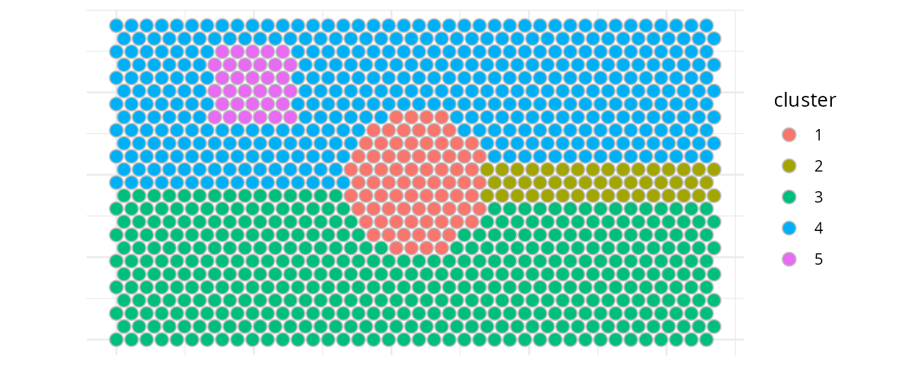
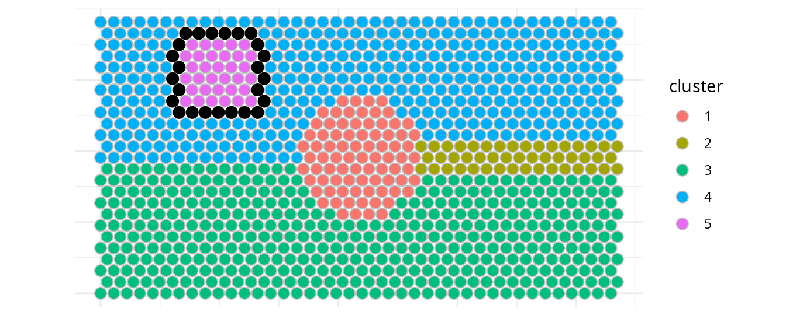
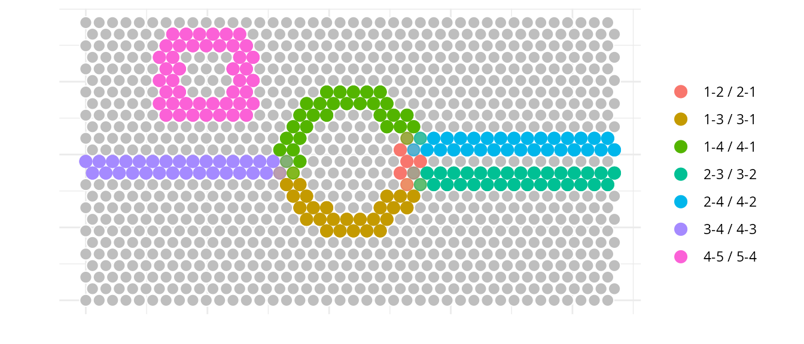
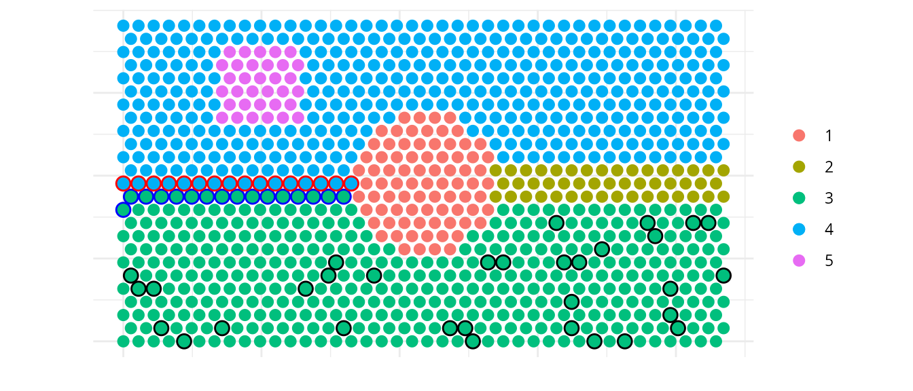
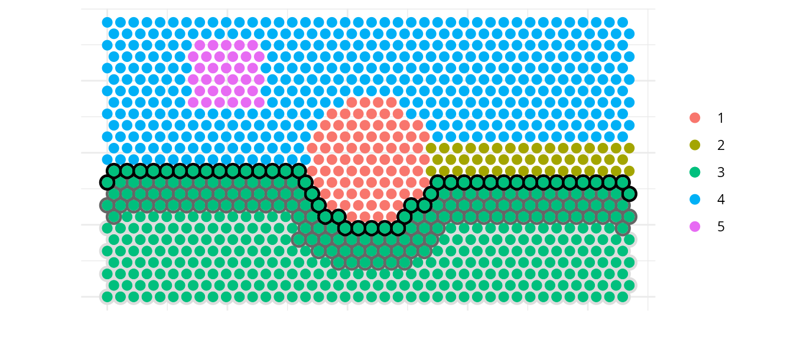
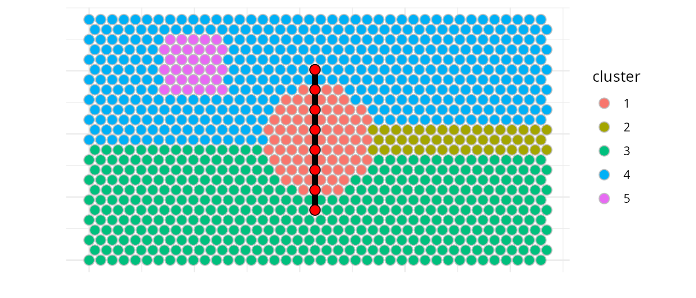
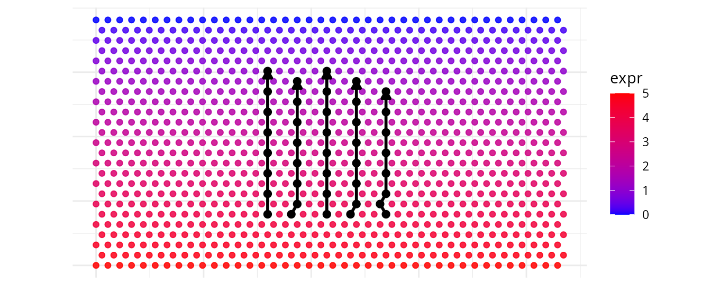
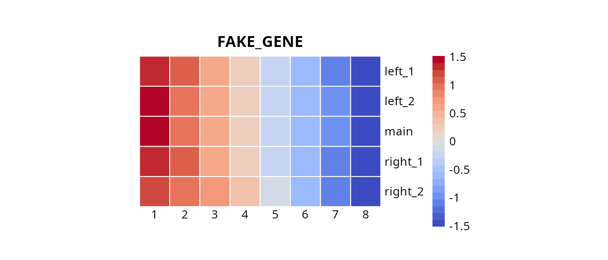
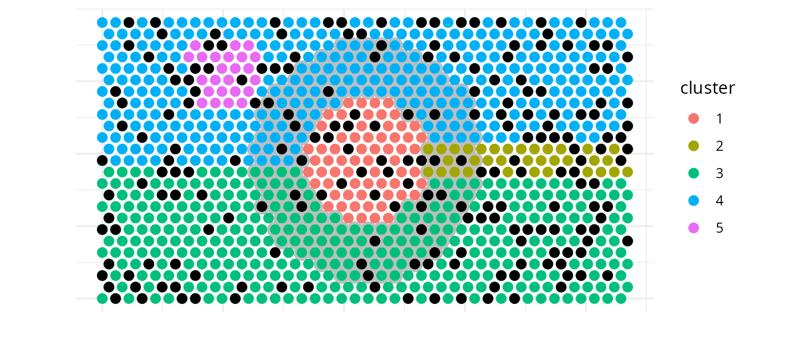

Battlefield
Jean-Philippe Villemin
Institut de Recherche en Cancérologie de Montpellier, Inserm, Montpellier, Francejean-philippe.villemin@inserm.fr
01/12/2026
Source:vignettes/Battlefield-Main.Rmd
Battlefield-Main.RmdAbstract
Battlefield is a Swiss-army toolkit
designed to define and extract spatial spots from specific regions
in spatial transcriptomics data. It provides
low-level, modular utilities to delineate spatial regions of
interest, including interfaces between clusters,
intra-cluster layers, and inter-cluster
trajectories. These utilities are intended to
be reused and composed within higher-level analytical workflows
and packages. Battlefield supports
sequencing-based spatial transcriptomics platforms such as
10x Genomics Visium, across multiple resolutions,
including Visium HD (binned). Battlefield package
version: 0.99.1
library(Battlefield)
library(SpatialExperiment)
library(ggplot2)
library(dplyr)
library(tidyr)
library(pheatmap)
library(pals)
library(grid)Introduction
Battlefield is a Swiss-army toolkit designed to
define and extract spatial spots from specific regions in spatial
transcriptomics data. It provides low-level, modular
utilities to delineate spatial regions of interest,
including interfaces between clusters,
intra-cluster layers, and
inter-cluster trajectories. These utilities
are intended to be reused and composed within higher-level
analytical workflows and packages. Battlefield
supports sequencing-based spatial transcriptomics platforms such
as
10x Genomics Visium, across multiple resolutions,
including
Visium HD (binned).
What is it for?
Battlefield provides four core functionalities to define
and extract spatial transcriptomics spots from specific tissue regions,
enabling the study of spatial organization under different biological
contexts:
Interfaces between clusters — identify and analyze boundary regions where distinct tissue or cell populations interact.
Intra-cluster layers — characterize spatial layers or gradients within a single cluster.
Inter/Intra-cluster trajectories — model spatial transitions across multiple clusters.
Spatial neighborhood — report the cluster composition of a spatial neighborhood defined by k nearest spots, constrained by a distance threshold.
Finally, you can integrate Battlefield results back into
a SpatialExperiment object for further analysis.
Starting point
We start from a SpatialExperiment object that contains
(i) spatial coordinates for each spot and
(ii) a precomputed clustering stored in colData().
Battlefield operates on a simple spot-level table, so we first export a data.frame with four columns:
- spot_id: spot/barcode identifier (colnames(spe))
- x, y: spatial coordinates (spatialCoords(spe))
- cluster: cluster label provided by the user (a column in colData(spe))
Because the cluster annotation can have different names depending on the workflow (e.g., cluster, seurat_clusters, BayesSpace, etc.), the user can specify which colData() column should be used.
We load a simulated Visium dataset (hexagonal grid) to illustrate the different functionalities that Battlefield provides.
# Load Visium data
data("visium_simulated_spe")
df <- data.frame(
spot_id = colnames(visium_simulated_spe),
x = spatialCoords(visium_simulated_spe)[, 1],
y = spatialCoords(visium_simulated_spe)[, 2],
cluster = colData(visium_simulated_spe)$cluster
)
# Plot cluster distribution
ggplot(df, aes(x, y, fill = cluster)) +
geom_point(size = 3.2,colour = "grey", shape = 21) +
coord_equal() +
theme_minimal()+
labs(x = "", y = "") +
theme(axis.text = element_blank()) 
You can have acces to some basic information about the dataset you are using (grid type, distance threshold (radius) advised…)
# Detect grid type and get parameters
res <- detect_grid_type(df, verbose = TRUE)## ---- Grid type detection ----## Estimated grid step: 55## Median distance ratio: 1.732## Detected grid type: hexagonal## --------------------------------
params <- get_neighborhood_params(df, verbose = TRUE)## ---- Neighborhood parameters ----## grid_type: hexagonal## connectivity: 6## radius: 55.55## k: 6## comment: Standard Visium: 6 hexagonal neighbors## --------------------------------Interfaces between clusters
Battlefield allows you to identify and extract spatial interfaces between clusters. Here we demonstrate how to:
- Detect interfaces between two specific clusters (according to three
modes of selection called
inner,outerorboth) - Identify multi-interface spots all at once
- Detect a same number of control spots relative to the cluster of interest
Battlefield offers several functionalities related to
interfaces (aka borders) via the following fonctions metionned
below:
-
select_border_spots, between two clusters according to a specified mode build_all_borders-
select_core_spots, to select control spots within a cluster relative to its border build_all_cores
You must have first defined borders before selecting core spots.
Here we show an example to detect interfaces between clusters 4 and
5. We identify border spots from cluster 4 that are adjacent to cluster
5, referenced as interface for the adjactent cluster.
We used the inner mode to select spots, meaning that only
spots from cluster 4 that are located in the inside of the cluster
towards cluster 5 (the interface) are selected.
Note : we used a max_dist = 60 microns to define the
spatial neighborhood to remove spots that would have been too far away
to be considered as neighbors.
border_in <- select_border_spots(df,
cluster = 4,
interface = 5,
mode = "inner",
max_dist = 60)
# A similar approach would have been
# select_border_spots(df,
# cluster = 5,
# interface = 4,
# mode = "outer",
# max_dist = 60)
knitr::kable(head(border_in))| spot_id | x | y | directed_pair | undirected_pair | cluster | interface | is_border | is_border_multiple | other_adjacent_borders | mode | |
|---|---|---|---|---|---|---|---|---|---|---|---|
| 647 | SPOT0647 | 330 | 762.1024 | 4-5 | 4-5 / 5-4 | 4 | 5 | TRUE | FALSE | NA | inner |
| 648 | SPOT0648 | 385 | 762.1024 | 4-5 | 4-5 / 5-4 | 4 | 5 | TRUE | FALSE | NA | inner |
| 649 | SPOT0649 | 440 | 762.1024 | 4-5 | 4-5 / 5-4 | 4 | 5 | TRUE | FALSE | NA | inner |
| 650 | SPOT0650 | 495 | 762.1024 | 4-5 | 4-5 / 5-4 | 4 | 5 | TRUE | FALSE | NA | inner |
| 651 | SPOT0651 | 550 | 762.1024 | 4-5 | 4-5 / 5-4 | 4 | 5 | TRUE | FALSE | NA | inner |
| 652 | SPOT0652 | 605 | 762.1024 | 4-5 | 4-5 / 5-4 | 4 | 5 | TRUE | FALSE | NA | inner |
# Structre data
df_in <- df |>
mutate(is_border = spot_id %in% border_in$spot_id) |>
left_join(border_in |>
select(spot_id, is_border_multiple),by = "spot_id") |>
mutate(is_border_multiple = coalesce(is_border_multiple, FALSE))
# Plot interface 5 → 4
ggplot(df_in, aes(x, y, fill = cluster)) +
geom_point(size = 3.2, shape = 21, colour = "grey") +
geom_point(data = subset(df_in, is_border & !is_border_multiple),
size = 3.2, colour = "black", fill = NA) +
geom_point(data = subset(df_in, is_border & is_border_multiple),
size = 3.2, colour = "red", fill = NA) +
coord_equal() +
theme_minimal()+
labs(x = "", y = "") +
theme(axis.text = element_blank()) 
We can also identify all interfaces at once and visualize spots that
are part of multiple interfaces. Here we used again a
max_dist = 60 microns and k = 6 neighbors to
define the spatial neighborhood.
is_border_multiple indicates whether a spot is part of
multiple interfaces and is plotted with a different alpha in the
example.
This approach needs further manual selection of the cluster pair of
interest as it brings some redundacy. (for example, border spots for
both directions 3→4 and 4→3 are identified twice due to sequencial call
of select_border_spots with the two modes
(inner/outer)).
all_borders <- build_all_borders(df,max_dist = 60 , k = 6)
knitr::kable(head(all_borders))| spot_id | x | y | directed_pair | undirected_pair | cluster | interface | is_border | is_border_multiple | other_adjacent_borders | mode |
|---|---|---|---|---|---|---|---|---|---|---|
| SPOT0299 | 1017.5 | 333.4198 | 1-3 | 1-3 / 3-1 | 1 | 3 | TRUE | FALSE | NA | inner |
| SPOT0300 | 1072.5 | 333.4198 | 1-3 | 1-3 / 3-1 | 1 | 3 | TRUE | FALSE | NA | inner |
| SPOT0301 | 1127.5 | 333.4198 | 1-3 | 1-3 / 3-1 | 1 | 3 | TRUE | FALSE | NA | inner |
| SPOT0302 | 1182.5 | 333.4198 | 1-3 | 1-3 / 3-1 | 1 | 3 | TRUE | FALSE | NA | inner |
| SPOT0338 | 935.0 | 381.0512 | 1-3 | 1-3 / 3-1 | 1 | 3 | TRUE | FALSE | NA | inner |
| SPOT0339 | 990.0 | 381.0512 | 1-3 | 1-3 / 3-1 | 1 | 3 | TRUE | FALSE | NA | inner |
# Structure data
df2 <- df |>
left_join(all_borders |>
select(spot_id, undirected_pair, is_border_multiple),by = "spot_id") |>
mutate(is_border = !is.na(undirected_pair),
is_border_multiple = coalesce(is_border_multiple, FALSE))
# Plot all interfaces
ggplot(df2, aes(x, y)) +
geom_point(data = subset(df2, !is_border),
fill="grey" ,colour = "white", size = 3.2,shape = 21) +
geom_point(data = subset(df2, is_border & is_border_multiple),
aes(color = undirected_pair), size = 3.2, alpha = 0.4) +
geom_point(data = subset(df2, is_border & !is_border_multiple),
aes(color = undirected_pair), size = 3.2) +
coord_equal() +
theme_minimal()+
labs(x = "", y = "",color = "") +
theme(axis.text = element_blank()) 
Next, we plot the different types of spots identified for the interface between clusters 3 and 4. We identify border spots for both directions (3→4 and 4→3) and a relative selection of core spots within cluster 3 that can be used as control spots for further analysis.
# Get all pairs and detect grid
pairs_visium <- directed_cluster_interface_pairs(df$cluster)
params_visium <- get_neighborhood_params(df, verbose = FALSE)
# Define cluster pair of interest
cluster_A <- 3
cluster_B <- 4
# Build all borders to identify inner spots
all_borders_visium <- build_all_borders(df, k = 6, pairs = pairs_visium)
# Select border spots for both directions
border_A_to_B <- subset(all_borders_visium,
cluster == cluster_A & interface == cluster_B
)
border_B_to_A <- subset(all_borders_visium,
cluster == cluster_B & interface == cluster_A
)
# Select inner spots for cluster A
inner_A <- select_core_spots(df, all_borders_visium,
cluster = cluster_A,
interface = cluster_B,
mode = "both")
# Create visualization dataframe with spot classification
df_final <- df |>
mutate(spot_type = "background") |>
mutate(spot_type = ifelse(spot_id %in% border_A_to_B$spot_id,
"border_A_to_B", spot_type)) |>
mutate(spot_type = ifelse(spot_id %in% border_B_to_A$spot_id,
"border_B_to_A", spot_type)) |>
mutate(spot_type = ifelse(spot_id %in% inner_A$spot_id,
"inner_A", spot_type)) |>
as.data.frame()
# Plot: clusters with borders and core control spots
ggplot(df_final, aes(x, y)) +
# 1) Base clusters fill="gray" ,colour = "grey", size = 3.2,shape = 21) + # nolint: line_length_linter.
geom_point(aes(color = cluster), size = 2.5) +
# 2) Draw outlines (slightly larger) so they "surround" without hiding
geom_point(data = subset(df_final, spot_type == "border_A_to_B"),
color = "blue", size = 2.5, shape = 1, stroke = 1.25) +
geom_point(data = subset(df_final, spot_type == "border_B_to_A"),
color = "red", size = 2.5, shape = 1, stroke = 1.25) +
geom_point(data = subset(df_final, spot_type == "inner_A"),
color = "black", size = 2.5, shape = 1, stroke = 1.25) +
# 3) Re-draw the colored points ON TOP for the highlighted subset
geom_point(
data = subset(df_final, spot_type %in% c("border_A_to_B", "border_B_to_A", "inner_A")),
aes(color = cluster),
size = 2.5
) +
coord_equal() +
theme_minimal() +
labs(x = "", y = "",color = "") +
theme(axis.text = element_blank())
Intra-cluster layers
You can directly work on a specific cluster to define three layers as
core, intermediate and border.intermediate_quantile allows to control the thickness of
the intermediate layer.
target_cluster <- 3
# Narrow intermediate layer
layers_df <- create_cluster_layers(df,
target_cluster = target_cluster,
intermediate_quantile = 0.33)
# Create visualization dataframe
df_viz <- df |>
mutate(layer = NA_character_) |>
as.data.frame()
# Map layers to the full dataset
idx_match <- match(layers_df$spot_id, df_viz$spot_id)
valid_idx <- !is.na(idx_match)
df_viz$layer[idx_match[valid_idx]] <- layers_df$layer[valid_idx]
# Create combined plot: clusters in background + layers overlay with circles
ggplot(df_viz, aes(x, y)) +
# base clusters
geom_point(aes(color = cluster), size = 2.5) +
# 2) Draw outlines (slightly larger) so they "surround" without hiding
geom_point(
data = subset(df_viz, layer == "core"),
shape = 1, color = "#DDDDDD",
size = 3.2, stroke = 1.25
) +
geom_point(
data = subset(df_viz, layer == "intermediate"),
shape = 1, color = "#666666",
size = 3.2, stroke = 1.25
) +
geom_point(
data = subset(df_viz, layer == "border"),
shape = 1, color ="black",
size = 3.2, stroke = 1.25
) +
# 3) Re-draw the colored points ON TOP for the highlighted subset
geom_point(
data = subset(df_viz, layer %in% c("core", "intermediate", "border")),
aes(color = cluster),
size = 2.5
) +
coord_equal() +
theme_minimal()+ labs(
x = "", y = "", color = ""
) +
theme(
axis.text = element_blank()
) 
Inter/Intra-cluster trajectories
We can also identify spatial trajectories between two spots from two cluster or inside a single cluster.
Here we demonstrate how to build a trajectory between clusters 3 and
4 using build_one_trajectory().
# We retrieve expression for later visualization
expr <- as.numeric(assay(visium_simulated_spe, "counts")["FAKE_GENE", ])
test <- cbind(as.data.frame(colData(visium_simulated_spe)), df[, c("x", "y"), drop = FALSE])
test$expr <- expr
start_cluster <- "3"
end_cluster <- "4"
top_n <- 8
centroids <- compute_centroids(df)
A <- centroids[centroids$cluster == start_cluster, c("x","y")]
B <- centroids[centroids$cluster == end_cluster, c("x","y")]
res <- build_one_trajectory(df, A, B, top_n = top_n, max_dist = NULL)
knitr::kable(head(res))| spot_id | x | y | cluster | dist_to_seg | pos_on_seg | trajectory_id |
|---|---|---|---|---|---|---|
| SPOT0220 | 1072.5 | 238.1570 | 3 | 11.5795728 | 0.0027532 | main |
| SPOT0300 | 1072.5 | 333.4198 | 1 | 8.6442774 | 0.1480379 | main |
| SPOT0380 | 1072.5 | 428.6826 | 1 | 5.7089820 | 0.2933227 | main |
| SPOT0460 | 1072.5 | 523.9454 | 1 | 2.7736866 | 0.4386074 | main |
| SPOT0540 | 1072.5 | 619.2082 | 1 | 0.1616088 | 0.5838921 | main |
| SPOT0620 | 1072.5 | 714.4710 | 1 | 3.0969042 | 0.7291769 | main |
# Plot cluster distribution
ggplot(test, aes(x, y, fill = cluster)) +
geom_point(size = 3.2,colour="grey", shape = 21) +
geom_path(data=res, aes(x=x, y=y, group=trajectory_id),
color="black",linewidth=2) +
geom_point(data = res, aes(x, y),
size = 3.2, fill="red",colour="black", shape = 21) +
coord_equal() +
theme_minimal() +
labs(x = "", y = "") +
theme(axis.text = element_blank())
But the real interest here is to identify multiple similar
trajectories for a fixed number of spots and trajectories to explore
possible gene expression gradients using
build_similar_trajectories().
Here we build two extra trajectories on each side of the main
trajectory.lane_factor allows to control the spacing between
trajectories. The number of trajectories returned is
n_extra according to the side parameter
setting.
out <- build_similar_trajectories(df, A, B,
top_n = top_n,
n_extra = 2,
lane_width_factor = 2.5,
side = "both")
knitr::kable(head(out))| spot_id | x | y | cluster | dist_to_seg | pos_on_seg | trajectory_id | offset |
|---|---|---|---|---|---|---|---|
| SPOT0220 | 1072.5 | 238.1570 | 3 | 11.5795728 | 0.0027532 | main | 0 |
| SPOT0300 | 1072.5 | 333.4198 | 1 | 8.6442774 | 0.1480379 | main | 0 |
| SPOT0380 | 1072.5 | 428.6826 | 1 | 5.7089820 | 0.2933227 | main | 0 |
| SPOT0460 | 1072.5 | 523.9454 | 1 | 2.7736866 | 0.4386074 | main | 0 |
| SPOT0540 | 1072.5 | 619.2082 | 1 | 0.1616088 | 0.5838921 | main | 0 |
| SPOT0620 | 1072.5 | 714.4710 | 1 | 3.0969042 | 0.7291769 | main | 0 |
ggplot(test, aes(x, y)) +
geom_point(aes(color = expr),size = 1.6, alpha = 0.85) +
scale_color_gradient(low = "blue",high = "red") +
geom_path(data=out, aes(x=x, y=y, group=trajectory_id),
inherit.aes = FALSE, color="black",linewidth=1,
arrow = grid::arrow(type = "closed", length = grid::unit(2, "mm"))) +
geom_point(data = out, aes(x, y),
inherit.aes = FALSE, size = 2.2, fill="white",color="black") +
coord_equal() +
theme_minimal() +
labs(x = "", y = "") +
theme(axis.text = element_blank())
We can now explore quickly the expression of this fake gene via an heatmap.
meta <- out|>
transmute(
spot_id = as.character(spot_id),
trajectory = as.character(trajectory_id),
progress = as.numeric(pos_on_seg)
) |>
group_by(trajectory) |>
arrange(progress, .by_group = TRUE) |>
mutate(
index = seq_len(n()) # <- index 1..length ordered according to t
) |>
ungroup()
gene <- c("FAKE_GENE")
expr <- assay(visium_simulated_spe, "counts")[gene, meta$spot_id]
meta$expr <- expr
mat <- meta |>
select(trajectory, index, expr) |>
tidyr::pivot_wider(names_from = index, values_from = expr) |>
as.data.frame()
rownames(mat) <- mat$trajectory
mat$trajectory <- NULL
pheatmap(
mat,
cluster_rows = FALSE,
cluster_cols = FALSE,
border_color = "white",
main = gene,angle_col=0,
col=pals::coolwarm(), scale="row",
cellwidth=25, cellheight=25 , na_col = "grey90"
)
Spatial neighborhood
Battlefield also provides a utility to report the
cluster composition of a spatial neighborhood defined by k nearest
spots, constrained by a distance threshold. It can used a cluster or a
spot of interest.
There is three major functions :
-
get_neighborhood_spots: get the spots in the neighborhood of a cluster -
count_neighborhood: count the composition of a neighborhood for a cluster -
count_all_neighborhoods: count the composition of neighborhoods for all clusters
By default, it will report clusters present in the neighborhood but
you can provide another column name with inlaid_col
parameter to report other annotations.
# Getting neighborhoods...
neighborhood_spots_1 <- get_neighborhood_spots(df, cluster = 1, k = 200)
head(neighborhood_spots_1)## spot_id x y cluster neighborhood is_neighborhood
## SPOT0465 SPOT0465 1347.5 523.9454 1 2 TRUE
## SPOT0466 SPOT0466 1402.5 523.9454 1 2 TRUE
## SPOT0467 SPOT0467 1457.5 523.9454 1 2 TRUE
## SPOT0468 SPOT0468 1512.5 523.9454 1 2 TRUE
## SPOT0506 SPOT0506 1375.0 571.5768 1 2 TRUE
## SPOT0507 SPOT0507 1430.0 571.5768 1 2 TRUE
# Counting the clusters in the neighborhoods...
neighb_vis <- count_neighborhood(df, cluster = 1, k = 100)
head(neighb_vis)## cluster neighborhood count proportion
## 1 1 4 49 0.49
## 2 1 3 45 0.45
## 3 1 2 6 0.06We simulated another another annotation to create inlaid black spots that we will count in the neighborhood of cluster 1 just after the plot.
neighb_vis <- count_all_neighborhoods(df, k = 100)
# Add inlaid column with random values (5 categories)
df$inlaid <- sample(paste0("inlaid", 1:5), nrow(df), replace = TRUE)
df_neighborhood_viz <- df |>
mutate(
spot_type = "background",
spot_type = ifelse(cluster == 1, "source", spot_type),
spot_type = ifelse(spot_id %in% neighborhood_spots_1$spot_id,
"neighborhood", spot_type)
) |>
as.data.frame()
# Apply the same cluster factor levels as df_vis
df_neighborhood_viz$cluster <- factor(df_neighborhood_viz$cluster,
levels = sort(unique(df$cluster)))
ggplot(df_neighborhood_viz, aes(x, y)) +
geom_point(
data = subset(df_neighborhood_viz, spot_type == "neighborhood"),
shape = 1,
color = "grey",
size = 3.2,
stroke = 1.25
) +
geom_point(
aes(color = cluster),
size = 2.5
) +
geom_point(
data = subset(df_neighborhood_viz, inlaid == "inlaid1"),
fill = "black",
size = 2.5
) +
coord_equal() +
theme_minimal() +
labs(x = "", y = "") +
theme(axis.text = element_blank()
)
# Counting the black point -inlaid spots- in the neighborhood of cluster 1
neighb_vis <- count_neighborhood(df, cluster = 1, inlaid_col = "inlaid",k = 100)
head(neighb_vis)## cluster neighborhood count proportion
## 1 1 inlaid2 26 0.26
## 2 1 inlaid4 25 0.25
## 3 1 inlaid5 19 0.19
## 4 1 inlaid1 15 0.15
## 5 1 inlaid3 15 0.15We previously count these point in the neighborhood of cluster 1. We can count the black spots directly inside cluster 1.
For this purpose, three major functions are available:
-
get_inlaid_spots: get the inlaid spots inside a cluster -
count_inlaid: count the composition of inlaid spots for a cluster -
count_all_inlaids: count the composition of inlaid spots for all clusters
# === Testing get_inlaid_spots
inlaid_spots_1 <- get_inlaid_spots(df, cluster = 1, inlaid_col = "inlaid")
# === Testing count_inlaid ===
inlaid_1 <- count_inlaid(df, cluster = 1, inlaid_col = "inlaid")
# === Testing count_all_inlaids ===
all_inlaids <- count_all_inlaids(df, inlaid_col = "inlaid")
knitr::kable(head(all_inlaids, 15))| cluster | inlaid | count | proportion |
|---|---|---|---|
| 1 | inlaid2 | 19 | 0.2345679 |
| 1 | inlaid3 | 19 | 0.2345679 |
| 1 | inlaid1 | 17 | 0.2098765 |
| 1 | inlaid4 | 13 | 0.1604938 |
| 1 | inlaid5 | 13 | 0.1604938 |
| 2 | inlaid1 | 13 | 0.2765957 |
| 2 | inlaid3 | 11 | 0.2340426 |
| 2 | inlaid2 | 10 | 0.2127660 |
| 2 | inlaid4 | 7 | 0.1489362 |
| 2 | inlaid5 | 6 | 0.1276596 |
| 3 | inlaid2 | 100 | 0.2336449 |
| 3 | inlaid1 | 87 | 0.2032710 |
| 3 | inlaid4 | 86 | 0.2009346 |
| 3 | inlaid5 | 83 | 0.1939252 |
| 3 | inlaid3 | 72 | 0.1682243 |
Ending point
You can finaly integrate Battlefield results back into a
SpatialExperiment object for further analysis :
visium_simulated_spe <- add_borders_to_spe(visium_simulated_spe,
border = all_borders)
head(colData(visium_simulated_spe))## DataFrame with 6 rows and 7 columns
## barcode_id cluster sample_id is_border is_core interface
## <character> <factor> <character> <logical> <logical> <character>
## SPOT0001 SPOT0001 3 sample01 FALSE FALSE NA
## SPOT0002 SPOT0002 3 sample01 FALSE FALSE NA
## SPOT0003 SPOT0003 3 sample01 FALSE FALSE NA
## SPOT0004 SPOT0004 3 sample01 FALSE FALSE NA
## SPOT0005 SPOT0005 3 sample01 FALSE FALSE NA
## SPOT0006 SPOT0006 3 sample01 FALSE FALSE NA
## border_mode
## <character>
## SPOT0001 NA
## SPOT0002 NA
## SPOT0003 NA
## SPOT0004 NA
## SPOT0005 NA
## SPOT0006 NA
visium_simulated_spe <- add_layers_to_spe(visium_simulated_spe,
layer = layers_df)
head(colData(visium_simulated_spe))## DataFrame with 6 rows and 8 columns
## barcode_id cluster sample_id is_border is_core interface
## <character> <factor> <character> <logical> <logical> <character>
## SPOT0001 SPOT0001 3 sample01 FALSE FALSE NA
## SPOT0002 SPOT0002 3 sample01 FALSE FALSE NA
## SPOT0003 SPOT0003 3 sample01 FALSE FALSE NA
## SPOT0004 SPOT0004 3 sample01 FALSE FALSE NA
## SPOT0005 SPOT0005 3 sample01 FALSE FALSE NA
## SPOT0006 SPOT0006 3 sample01 FALSE FALSE NA
## border_mode layer
## <character> <character>
## SPOT0001 NA core
## SPOT0002 NA core
## SPOT0003 NA core
## SPOT0004 NA core
## SPOT0005 NA core
## SPOT0006 NA core
visium_simulated_spe <- add_trajectories_to_spe(visium_simulated_spe,
trajectory = out)
head(colData(visium_simulated_spe))## DataFrame with 6 rows and 12 columns
## barcode_id cluster sample_id is_border is_core interface
## <character> <factor> <character> <logical> <logical> <character>
## SPOT0001 SPOT0001 3 sample01 FALSE FALSE NA
## SPOT0002 SPOT0002 3 sample01 FALSE FALSE NA
## SPOT0003 SPOT0003 3 sample01 FALSE FALSE NA
## SPOT0004 SPOT0004 3 sample01 FALSE FALSE NA
## SPOT0005 SPOT0005 3 sample01 FALSE FALSE NA
## SPOT0006 SPOT0006 3 sample01 FALSE FALSE NA
## border_mode layer trajectory_id offset pos_on_seg dist_to_seg
## <character> <character> <character> <numeric> <numeric> <numeric>
## SPOT0001 NA core NA NA NA NA
## SPOT0002 NA core NA NA NA NA
## SPOT0003 NA core NA NA NA NA
## SPOT0004 NA core NA NA NA NA
## SPOT0005 NA core NA NA NA NA
## SPOT0006 NA core NA NA NA NASession Information
## R Under development (unstable) (2025-12-18 r89199)
## Platform: x86_64-pc-linux-gnu
## Running under: Ubuntu 24.04.3 LTS
##
## Matrix products: default
## BLAS: /usr/lib/x86_64-linux-gnu/openblas-pthread/libblas.so.3
## LAPACK: /usr/lib/x86_64-linux-gnu/openblas-pthread/libopenblasp-r0.3.26.so; LAPACK version 3.12.0
##
## locale:
## [1] LC_CTYPE=en_US.UTF-8 LC_NUMERIC=C
## [3] LC_TIME=fr_FR.UTF-8 LC_COLLATE=en_US.UTF-8
## [5] LC_MONETARY=fr_FR.UTF-8 LC_MESSAGES=en_US.UTF-8
## [7] LC_PAPER=fr_FR.UTF-8 LC_NAME=C
## [9] LC_ADDRESS=C LC_TELEPHONE=C
## [11] LC_MEASUREMENT=fr_FR.UTF-8 LC_IDENTIFICATION=C
##
## time zone: Europe/Paris
## tzcode source: system (glibc)
##
## attached base packages:
## [1] grid stats4 stats graphics grDevices utils datasets
## [8] methods base
##
## other attached packages:
## [1] pals_1.10 pheatmap_1.0.13
## [3] tidyr_1.3.2 dplyr_1.1.4
## [5] ggplot2_4.0.1 SpatialExperiment_1.21.0
## [7] SingleCellExperiment_1.33.0 SummarizedExperiment_1.41.0
## [9] Biobase_2.71.0 GenomicRanges_1.63.1
## [11] Seqinfo_1.1.0 IRanges_2.45.0
## [13] S4Vectors_0.49.0 BiocGenerics_0.57.0
## [15] generics_0.1.4 MatrixGenerics_1.23.0
## [17] matrixStats_1.5.0 Battlefield_0.99.01
##
## loaded via a namespace (and not attached):
## [1] gtable_0.3.6 rjson_0.2.23 xfun_0.55
## [4] bslib_0.9.0 htmlwidgets_1.6.4 lattice_0.22-7
## [7] vctrs_0.6.5 tools_4.6.0 tibble_3.3.1
## [10] pkgconfig_2.0.3 Matrix_1.7-4 RColorBrewer_1.1-3
## [13] S7_0.2.1 desc_1.4.3 lifecycle_1.0.5
## [16] compiler_4.6.0 farver_2.1.2 textshaping_1.0.4
## [19] mapproj_1.2.12 maps_3.4.3 htmltools_0.5.9
## [22] sass_0.4.10 yaml_2.3.12 pillar_1.11.1
## [25] pkgdown_2.2.0 jquerylib_0.1.4 DelayedArray_0.37.0
## [28] cachem_1.1.0 magick_2.9.0 abind_1.4-8
## [31] tidyselect_1.2.1 digest_0.6.39 purrr_1.2.1
## [34] labeling_0.4.3 fastmap_1.2.0 colorspace_2.1-2
## [37] cli_3.6.5 SparseArray_1.11.10 magrittr_2.0.4
## [40] S4Arrays_1.11.1 dichromat_2.0-0.1 withr_3.0.2
## [43] scales_1.4.0 rmarkdown_2.30 XVector_0.51.0
## [46] RANN_2.6.2 ragg_1.5.0 evaluate_1.0.5
## [49] knitr_1.50 rlang_1.1.7 Rcpp_1.1.1
## [52] glue_1.8.0 jsonlite_2.0.0 R6_2.6.1
## [55] systemfonts_1.3.1 fs_1.6.6